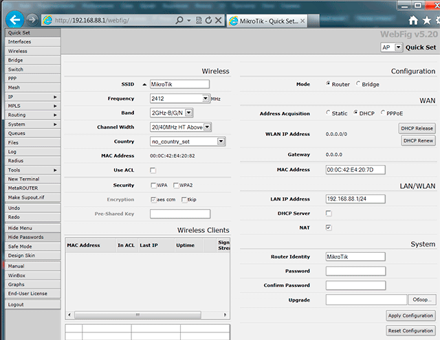
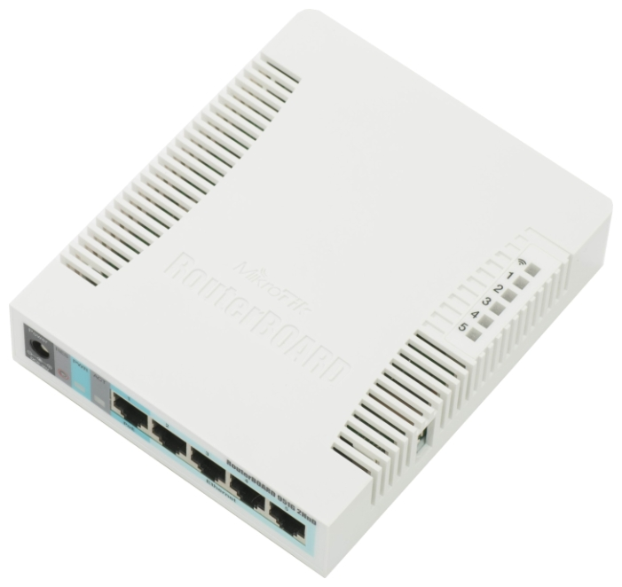
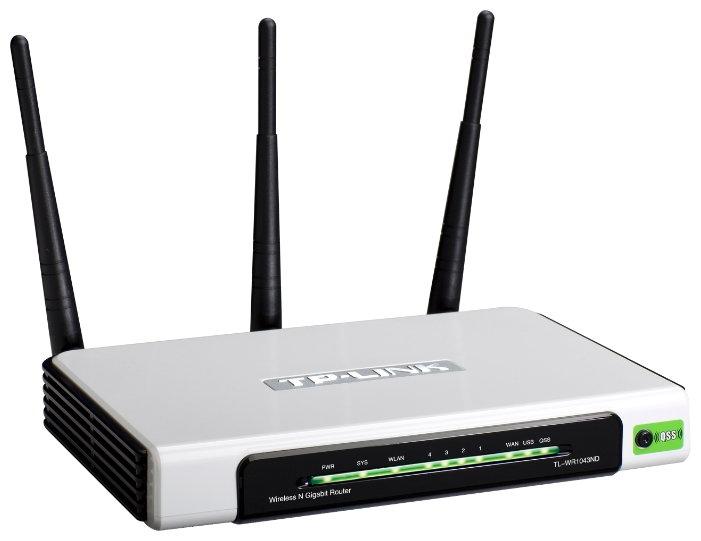

Роутер Mikrotik 951G-2HnD
Надоели мне глюки TP-Link’а и приобрёл я себе роутер фирмы Mikrotik, название которого приведено в заголовке. За него выступали операторский бэкграунд производителя, советы коллег, широта настроек и цена.
Поначалу меня немного отпугнуло не столько даже количество пунктов в меню, сколько обилие непонятных мне слов в этом самом меню и на страницах, которые открываются по нажатию на пункты меню. Надо сказать, что и до сих пор пугает.
Можно было бы подумать, что простые домашние пользователи потеряны для этого устройства. Но это не так. И сейчас я поесню почему. А главным козырем является страница по-умолчанию доступная сразу при подключении к устройству. Называется она QuickSet и выглядит вот так (фотку взял из интернета - лень скриншот делать и что-то там замазывать):

Да поначалу кажется, что тут много всего непонятного. Но на самом деле на этой странице просто приведены все настройки, которые достаточно выставить обычного домашнего использования устройства. Причём по-умолчанию всё выставлено сразу как надо. Единственное, что мне пришлось выставить - это название wifi, пароль wifi и страну. Ну и пароль для доступа в админку. Причём, можно было бы вообще ничего не настраивать, интернет и wifi начинают работать сразу после подключения проводов и питания. Но не здорово жить без пароля на wifi и особенно на интерфейс для настройки устройства - вдруг какой нехороший человек всё поломает.
Дальше, правда я поменял больше настроек, но это уже необходимо было для моих специфичных нужд. Я сменил сеть, раздаваемую по dhcp, на принятую в моей сети, уменьшил диапазон выдаваемых IP. Настроил port-forwarding, добавил static-arp и static-dhcp для сервера, настроил доступ к интерфейсу администрирования.
Краткие итоги обновки:
- Всё заработало сразу и без проблем
Wifi работает лучше, чем было. Это было основной целью замены роутера. Но всё равно забавно, потому что у микротика две встроенные антенны, а у TP-Link’а три внешние. Вот картинки для сравнения:  
При этом с TP-Link′ом раньше были мёртвые зоны, где wifi не работал, а теперь и в них тоже уверенный приём.
На столе стало больше свободного места.
Думаю, чего бы ещё интересного понастраивать.
Форвардинг DNS
Также настроил форвардинг DNS по условию. Это просто классная штука!
Суть в следующем: Проблема в том, что провайдерский DNS-сервер выдаёт неправильные адреса для некоторых доменов. И поэтому я хочу, чтобы DNS-запросы о некоторых доменных именах попадали на определённый DNS-сервер, который отличается от предоставляемого провайдером. Делается это при помощи настройки файрвола на роутере, который умеет работать в том числе на 7м уровне.
Реализацию хотелки я нашёл в этой статье: DNS Conditional forwarders with Mikrotik RouterOS Чтобы информация не пропала, продублирую настройки и здесь.
Итак, допустим у нас есть роутер Mikrotik с адресом 10.0.0.254.
И мы хотим, чтобы DNS-запрос для домена example.com был направлен на DNS-сервер с адресом 10.0.1.11.
Достичь этого можно, выполнив следующие команды на роутере:
[admin@RouterOS] > /ip firewall layer7-protocol add name=example.com regexp=example.com
[admin@RouterOS] > /ip firewall mangle add chain=prerouting dst-address=10.0.0.254 layer7-protocol=example.com action=mark-connection new-connection-mark=example.com-forward protocol=tcp dst-port=53
[admin@RouterOS] > /ip firewall mangle add chain=prerouting dst-address=10.0.0.254 layer7-protocol=example.com action=mark-connection new-connection-mark=example.com-forward protocol=udp dst-port=53
[admin@RouterOS] > /ip firewall nat add action=dst-nat chain=dstnat connection-mark=example.com-forward to-addresses=10.0.1.11
[admin@RouterOS] > /ip firewall nat add action=masquerade chain=srcnat connection-mark=example.com-forward
Разберу по порядку, что здесь происходит:
- Заводим “новый протокол седьмого уровня”, которым считаем все пакеты, в которых встречается подстрока
example.com. Подстрока для проверки вставляется послеregexp= - В следующих двух строках маркируем пакеты приходящие на 53й порт протоколов tcp и udp нашего роутера, относящиеся к нашему “новому протоколу”. Это DNS-запросы о домене example.com
- Перенаправляем эти помеченные DNS-запросы на желаемый DNS-сервер.
- Ответы от этого DNS-сервера подставляем как ответы роутера.
Как это работает:
- Компьютеры, подключенные к роутеру, получают в качестве адреса DNS-сервера адрес роутера.
- Роутер распознаёт DNS-запросы об определённом домене и перенаправляет их на заданный DNS-сервер.
- Ответ от того DNS-сервера, передаёт клиентам, подменяя его обратный адрес был тот же, что и у роутера.
- Таким образом красиво получается сделать правильный доступ к заданным сайтам для всех устройств подключенных через данный роутер.